DESCRIZIONE - Le polveri
magiche sono sostanze formate da finissimi granelli. Le polveri sono comunemente
contenute in sacchetti (di cuoio o seta) od in contenitori rigidi di legno o
metallo dolce con chiusura a vite. Si noti che diversi tipi di polveri magiche
non possono essere miscelate senza perdere definitivamente il loro incantamento.
Per restare efficaci, inoltre, occorre che le poveri restino sempre secche ed
asciutte. Qualora,
infatti, una polvere si bagni questa perderà definitivamente ogni potere magico
(senza effettuare alcun tiro salvezza).
Ogni dose di polvere magica ha un
peso pari ad 0,2 libbre.
Per tale motivo, qualora non sia diversamente specificato, il valore in punti
esperienza ed il costo in monete d'oro si intende indicato per una singola dose
di polvere magica.
UTILIZZO
- Le polveri magiche sono
utilizzate necessariamente con una gestualità rituale (componente somatico
obbligatorio) attraverso la quale l'utilizzatore le sparge in un'area o su una
creatura (non è richiesto alcun componente di tipo vocale od il mantenimento
della concentrazione). Se una creatura ha a disposizione una polvere magica,
cospargere la stessa rappresenta un'azione
complessa avente
fattore iniziativa +4
(+6 se presenti in
contenitori rigidi con chiusura a vite).
Indipendentemente dal metodo utilizzato, ogni utilizzo consuma definitivamente
una dose di polvere magica. Si noti che
non risulta di alcuna utilità
utilizzare in una stessa azione più dosi di polvere magica
ottenendosi in tal modo il medesimo effetto ottenibile utilizzando una sola dose
di polvere. In particolare, tutte le polveri magiche possono essere sparse
secondo le seguenti modalità di spargimento scelte di volta in volta
dall'utilizzatore:
1) Concentrato:
con questa modalità la polvere magica è cosparsa in un'unica
posizione (esagono di 3
metri) adiacente all'utilizzatore avendo effetto sulle creature presenti in tali
posizione. Cospargere la polvere secondo tale penalità impone l'applicazione di
un malus di -5%
al tiro salvezza eventualmente previsto per resistere agli effetti della polvere
magica.
2) Arco Frontale:
con questa modalità l'utilizzatore sparge la polvere nelle
tre posizioni frontali
(tre esagoni di 3 metri) adiacenti alla sua persona avendo effetto su tutte le
creature presenti in tali posizione. Cospargere la polvere secondo tale penalità
non permette
l'applicazione di alcun modificatore
al tiro salvezza eventualmente previsto per resistere agli effetti della polvere
magica.
3) Sferico:
con questa modalità l'utilizzatore lancia la polvere in aria permettendo alla
stessa di avere effetto su tutte le creature presenti in un'area
di 9 metri di diametro su
di lui centrata (ivi compreso l'utilizzatore stesso). Cospargere la polvere
secondo tale penalità impone l'applicazione di un
bonus di +5%
al tiro salvezza eventualmente previsto per resistere agli effetti della polvere
magica.
RITROVAMENTO
- Le polveri magiche sono
comunemente contenute in un sacchetti capaci di contenere 1 libbra di polvere (5
dosi). Per tale motivo in caso di ritrovamento di una polvere magica si consulti
la seguente tabella tirando 1d20 per determinare il contenitore ritrovato.
| TIRO 1d20 | TIPOLOGIA | PESO | COSTO | PORTATA | NOTE |
| 1-2 | SACCHETTO DI SETA [U] | 0,1 LIBBRA | 2 CORONE | 1 LIBBRA (5 dosi) |
50% infiltrazioni, tiro salvezza stoffa |
| 3-10 | SACCHETTO DI CUOIO [C] | 0,25 LIBBRE | 0,5 CORONE | 1 LIBBRA (5 dosi) |
33% infiltrazioni, tiro salvezza cuoio |
| 11-16 | BARATTOLO DI LEGNO CON TAPPO A VITE [U] | 0,5 LIBBRE | 3 CORONE | 1 LIBBRA (5 dosi) |
10% infiltrazioni, tiro salvezza legno |
| 17-20 | BARATTOLO DI METALLO CON TAPPO A VITE [U] | 1 LIBBRA | 5 CORONE | 1 LIBBRA (5 dosi) |
10% infiltrazioni, tiro salvezza metalli dolci |
Una
volta determinato il contenitore si tiri
1d20
per determinare il numero delle dosi presenti nello stesso secondo quanto
riportato nel seguente schema:
[1-2]
1 dose,
[3-5]
2 dosi,
[6-9]
3 dosi,
[10-14]
4 dosi,
[15-20]
5 dosi.
| OGGETTO | Dust of Appearance |
| ORIGINE | MAGICA - DIVINATION |
| POTENZA | Least Minor Enchantment (75 xp, 150 gp) |
|
DESCRIZIONE
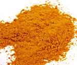 |
Questa polvere magica di colore arancione è in grado di svelare la presenza di creature rese invisibili da poteri magici. In particolare, tutte le creature invisibili presenti nell'area d'effetto in cui questa polvere magica è stata cosparsa hanno diritto a superare un tiro salvezza su magia per evitare gli effetti della stessa. Se il tiro salvezza fallisce la polvere aderirà al corpo delle creature rendendole visibili (secondo le normali condizioni di luminosità). Si noti che questa polvere permette di vedere creature rese invisibili per l'utilizzo di magie (si pensi alla magia di invisibilità della scuola delle illusioni), di poteri speciali (si pensi alle creature invisibili in quanto presenti in piani dimensionali di congiungimento) o di oggetti magici (si pensi ad un mantello dell'invisibilità). Le creature resi visibili da questa polvere resteranno tali per 10 round (ivi compreso il round nel quale la polvere è stata utilizzata). La polvere, invece, non permetterà di vedere creature che siano nascoste alla vista con metodi naturali (si pensi ad un ladro che utilizza l'abilità Hide in Shadow od alla abilità di mimetismo), ciò in quanto costoro non sono rese invisibili da un potere di tipo magico ma si sono semplicemente nascoste alla vista delle altre creature sfruttando le ombre o gli ostacoli naturali presenti nel luogo dove si sono appostate. |
| OGGETTO | Dust of Allergy |
| ORIGINE | MAGICA - NECROMANCY |
| POTENZA | Least Minor Enchantment (75 xp, 250 gp) |
|
DESCRIZIONE
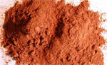 |
Questa polvere magica di colore rossastro è in grado di irritare il corpo delle creature presente nell'area in cui è cosparsa. In particolare, le vittime di questa polvere magica hanno diritto a superare un tiro salvezza su robustezza per evitare gli effetti della stessa. Se il tiro salvezza fallisce sul corpo della vittima appariranno bolle estremamente irritanti e la stessa sarà considerata incapacitata per tutto il resto del round in corso e per i quattro round immediatamente successivi. Solo creature aventi corpo di tipo animale possono subire gli effetti dell'incantamento presente in questa polvere magica (costruiti, non morti, melme, esseri vegetali o creature extraplanari saranno, ad esempio, immuni agli effetti di questo incantamento). |
| OGGETTO | Dust of Blood Draining |
| ORIGINE | MAGICA - NECROMANCY |
| POTENZA | Least Minor Enchantment (75 xp, 350 gp) |
|
DESCRIZIONE
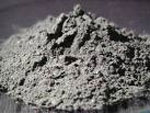 |
Questa polvere magica di colore grigio è in grado di assorbire il sangue delle creature presenti nell'area in cui è cosparsa. In particolare, le vittime di questa polvere magica hanno diritto a superare un tiro salvezza su energia vitale per evitare gli effetti della stessa. Se il tiro salvezza fallisce la vittima perderà 1d6+4 punti ferita per la perdita di fluido vitale causato dalla polvere. Solo creature aventi corpo di tipo animale possono subire gli effetti dell'incantamento presente in questa polvere magica (costruiti, non morti, melme, esseri vegetali o creature extraplanari saranno, ad esempio, immuni agli effetti di questo incantamento). |
| OGGETTO | Dust of Elements | ||||||||||||||||||||
| ORIGINE | MAGICA - EVOCATION | ||||||||||||||||||||
| POTENZA | Least Minor Enchantment (75 xp, 350 gp) | ||||||||||||||||||||
|
DESCRIZIONE
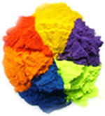 |
Questa polvere magica il cui
colore varia a seconda dell'elemento corrispondente è in grado evocare
nell'area in cui è sparsa materiale proveniente dai piani elementali
interni. In particolare, questa polvere può essere delle seguenti
tipologie:
Orbene, quando questa polvere è utilizzata il materiale evocato produrrà 2d6 danni magici della tipologia connessa al piano elementale interno di riferimento che le vittime potranno dimezzare superando un tiro salvezza su riflessi. |
| OGGETTO | Dust of Forgetfulness |
| ORIGINE | MAGICA - CHARM |
| POTENZA | Least Minor Enchantment (75 xp, 200 gp) |
|
DESCRIZIONE
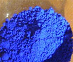 |
Questa polvere magica di colore blu intenso può causare la perdita temporanea della memoria a breve periodo. In particolare, le vittime di questa polvere magica hanno diritto a superare un tiro salvezza su mente per evitare gli effetti della stessa. Se il tiro salvezza fallisce la vittima perderà il ricordo di tutto ciò che è avvenuto nell'ultima ora che ha vissuto (ivi compreso l'utilizzo della polvere magica sulla sua persona). La vittima recupererà la memoria degli eventi accaduti solo dopo che sono trascorsi dieci giorni dal momento di utilizzo della polvere. |
| OGGETTO | Dust of Infernal Flame |
| ORIGINE | DIVINA - FORZE OSCURE - AZATAR (Evocation) |
| POTENZA | Least Minor Enchantment (75 xp, 350 gp) |
|
DESCRIZIONE
|
Questa polvere magica di colore rosso fuoco è in grado di evocare nell'area in cui è sparsa fiamme provenienti dal piano elementale interno del fuoco. Orbene, quando questa polvere è utilizzata il materiale evocato produrrà 3d3+1 danni da fuoco magico che le vittime potranno dimezzare superando un tiro salvezza su riflessi. |
| OGGETTO | Dust of Magical Detection |
| ORIGINE | MAGICA - DIVINATION |
| POTENZA | Least Minor Enchantment (75 xp, 200 gp) |
|
DESCRIZIONE
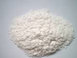 |
Questa polvere magica di colore bianco può essere utilizzata per individuare la natura magica degli oggetti. In particolare, quando questa polvere viene cosparsa in un'area, la stessa si attaccherà letteralmente all'oggetto magico presente nell'area avente il potere magico superiore. Se nell'area sono presenti oggetti magici aventi la medesima intensità di potere magico la polvere si attaccherà ad uno solo di questi selezionato casualmente. Se l'oggetto magico è contenuto in un contenitore (si pensi ad una pozione od un'altra polvere magica) la polvere si attaccherà al suo contenitore. La polvere resterà visibilmente attaccata all'oggetto magico per 10 round prima di svanire. Si noti che gli oggetti magici sui quali risulti ancora cosparsa una dose di questa polvere magica non attireranno altra polvere magica qualora la stessa sia cosparsa nella stessa zona in cui tali oggetti sono presenti. Deve osservarsi, infine, che questa polvere si attacca solo agli oggetti magici incantati in modo permanente non essendo attirata da oggetti incantati temporaneamente (ad esempio attraverso l'uso di incantesimi o poteri speciali). |
| OGGETTO | Dust of Positive Energy |
| ORIGINE | DIVINA - FRATELLANZA DELLA LUCE - TANATOS (Evocation) |
| POTENZA | Least Minor Enchantment (75 xp, 300 gp) |
|
DESCRIZIONE
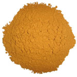 |
Questa polvere magica di colore giallo intenso può sprigionare nel luogo ove è cosparsa un potente flusso di energia positiva. In particolare, tutte le creature non-morte e demoniache presenti nell'area d'effetto di questa polvere magica subiranno 1d6+2 danni da irradiamento di energia positiva. Questi danni potranno essere dimezzati dalle vittime qualora queste superino un tiro salvezza su energia vitale. |
| OGGETTO | Dust of Sand Soldier |
| ORIGINE | MAGICA - SUMMONING |
| POTENZA | Least Minor Enchantment (75 xp, 400 gp) |
|
DESCRIZIONE
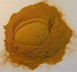 |
Questa polvere magica di tipo sabbioso è in grado di convocare al servizio di chi la utilizza una creatura del piano elementale interno della terra. In particolare, la polvere magica convocherà un Sand Soldier [link] che combatterà al fianco di chi ha utilizzato la polvere. A differenza delle altre polveri, l'utilizzo di questa polvere è un'azione complessa dalla durata di un intero round. Questa polvere, inoltre, può essere usata solo con la modalità di spargimento concentrato selezionando alla fine del round di utilizzo una posizione libera adiacente dove far apparire la creatura (se, per qualsiasi motivo, non vi sono caselle libere adiacenti a chi utilizza questa polvere magica la stessa sarà stata sprecata senza ottenere alcun effetto). Il Sand Soldier si limiterà a combattere per chi ha utilizzato la polvere magica, il quale dovrà comandare il soldato di sabbia utilizzando le normali regole per il comando delle creature convocate magicamente. Non sarà richiesta, però, alcuna prova al fine del mantenimento del soldato di sabbia essendo costui posto sotto il controllo dell'incantamento magico della polvere. Deve osservarsi, però, che l'utilizzo da parte del medesimo soggetto di ulteriori dosi di questa polvere nel corso della durata degli effetti di una dose precedentemente utilizzata sarà del tutto sprecata non dando luogo ad alcun effetto magico. Il Sand Soldier combatterà per tutta la durata dell'incantamento che è pari a 5 round oppure fino alla sua morte. Quando finisce l'effetto dell'incantamento il Sand Soldier svanirà senza lasciare alcuna traccia (né componenti magici mistici). |
| OGGETTO | Dust of Sleep |
| ORIGINE | MAGICA - CHARM |
| POTENZA | Least Minor Enchantment (75 xp, 400 gp) |
|
DESCRIZIONE
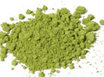 |
Questa polvere magica di colore
verde chiaro può far cadere in un sonno magico le creature che ne
subiscono gli effetti. In particolare, le vittime di questa polvere
magica hanno diritto a superare un tiro salvezza su mente per evitare
gli effetti della stessa. Si osservi che le creature aventi un ammontare
di 7 dadi vita/livelli o superiore saranno immuni agli effetti di questo
incantamento. Se il tiro salvezza fallisce la vittima si addormenterà
adagiandosi al suolo e finendo knockdown (creature in volo
planeranno al suolo senza schiantarsi). Le creature addormentate
continueranno a dormire non essendo svegliate da normali rumori (anche
da frastuoni dovuti alla battaglia). Ognuna di queste creature potrà
essere svegliata fisicamente con un'azione complessa (consistente in un
energico scuotimento). Danni fisici o intensi cambiamenti di stato (si
pensi all'immersione in acqua della creatura) sveglieranno sicuramente
la creatura. In ogni caso, la creatura si sveglierà alla fine del round
in corso potendo agire solo a partire dal successivo round. Costei,
inoltre, sarà ancora parzialmente stordita dalla sonnolenza magica nei
due round successivi a quello in cui si è svegliata e subirà le seguenti
penalità (gli avversari non avranno benefici al loro tiro per colpire):
|
| OGGETTO | Dust of Snake |
| ORIGINE | DIVINA - FORZE OSCURE - IL SERPENTE (Conjuration/Summoning) |
| POTENZA | Least Minor Enchantment (75 xp, 250 gp) |
|
DESCRIZIONE
|
Questa polvere magica di colore verde scuro è in grado di far apparire un serpente di polvere in grado di stritolare l'avversario scelto al momento dell'utilizzo. Per la sua particolare modalità di utilizzo, infatti, questa polvere può essere usata solo con la modalità di spargimento concentrato selezionando al momento dell'uso la vittima della stessa (per tale motivo non sarà applicata la penalità al tiro salvezza normalmente prevista per tale modalità di spargimento). La vittima ha diritto a superare un tiro salvezza su magia per evitare gli effetti della polvere. Qualora la polvere non sia utilizzata da un fedele del Serpente la vittima ottiene un bonus di +5% a tale tiro salvezza; se, invece, la polvere è utilizzata da un Ministro del Culto del Serpente la vittima ottiene una penalità di -5% al tiro salvezza. Il serpente di polvere, inoltre, può bloccare creature di dimensione Small e Medium, mentre le Large ottengono un bonus di +5% al tiro salvezza, creature più piccole o più grandi non saranno affette dalla magia. Se il tiro salvezza fallisce un serpente di polvere appare intorno alla vittima stritolandola. Il serpente di polvere ostacola la maggior parte dei movimenti della vittima che si considererà incapacitata per tutta la durata degli effetti dell'incantamento che è pari ad cinque round (ivi compreso il round nel quale la polvere è stata utilizzata). Il serpente non ha consistenza per tutte le altre creature e quindi non blocca attacchi e magie diretti contro la vittima. |
| OGGETTO | Dust of Web |
| ORIGINE | DIVINA - FORZE OSCURE - KALIAN (Conjuration/Summoning) |
| POTENZA | Least Minor Enchantment (75 xp, 250 gp) |
|
DESCRIZIONE
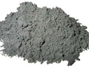 |
Questa polvere magica di colore grigio è in grado di far apparire una densa ragnatela di ragno nella posizione in cui è utilizzata. Per la sua particolare modalità di utilizzo, infatti, questa polvere può essere usata solo con la modalità di spargimento concentrato selezionando al momento dell'uso la posizione in cui far apparire la ragnatela (per tale motivo non sarà applicata la penalità al tiro salvezza normalmente prevista per tale modalità di spargimento). Una creatura che entra nella ragnatela o si trova nella sua posizione al momento dell'uso della polvere resterà invischiata qualora non superi un tiro salvezza su robustezza. Le creature di taglia large hanno un bonus di +5% al tiro salvezza. Se il tiro salvezza riesce la vittima potrà restare liberamente nell'esagono in questione od uscirne senza difficoltà ma qualora esca e rientri nel medesimo esagono dovrà superare un nuovo tiro salvezza. Se il tiro salvezza fallisce, la creatura non potrà spostarsi dalla zona occupata e si considererà incapacitata ai fini dell'applicazione delle altre penalità ottenute nel combattimento. Per liberarsi dalla ragnatela prima della fine della durata dell'incantesimo la vittima potrà unicamente provare a liberarsi con la forza. Tale azione che richiede un intero round e comporta l'accumulo di un punto fatica provocherà alla ragnatela danni pari al valore numerico per il quale la creatura è riuscita in una prova di forza (con un tiro pari o superiore alla propria forza, quindi, non provocherà alcun danno alla ragnatela). Le creature di taglia large riceveranno un bonus di +2 alla prova di forza. La ragnatela può subire fino a 20 punti danno prima di essere lacerata. I danni sono effettuati alla fine del round per cui la creatura sarà libera di agire solo nel round successivo alla distruzione della ragnatela. Terze creature possono, se munite di armi da taglio, aiutare a rompere la ragnatela. Costoro dovranno effettuare per ogni attacco una prova di destrezza (con –1 di penalità se usano armi medium e -3 se usano armi large). Se la prova è effettuata con successo l’attacco (senza necessità di alcun tiro per colpire) danneggerà solo la ragnatela provocandole normali danni, se invece la prova fallisce la ragnatela e la creatura bloccata si divideranno i danni provocati con l'attacco (la ragnatela subirà danni per eccesso). In ogni caso, al termine dell'effetto magico, che dura 5 round la ragnatela svanirà. Le creature di taglia huge o gargantuan non sono bloccate da questa ragnatela. |
| OGGETTO | Dust of Wounds |
| ORIGINE | MAGICA - NECROMANCY |
| POTENZA | Least Minor Enchantment (75 xp, 450 gp) |
|
DESCRIZIONE
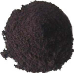 |
Questa polvere magica di colore grigio scuro è in grado di far sanguinare copiosamente le ferite presenti sul corpo della vittima rendendole al contempo assai dolorose. L'incantamento presente in questa polvere avrà effetto solo su creature "ferite" ossia su creature che abbiano subito almeno il 26% dei danni. In particolare, le vittime di questa polvere magica hanno diritto a superare un tiro salvezza su energia vitale per evitarne gli effetti. Se il tiro salvezza è fallito le loro ferite diventeranno molto dolorose e costoro soffriranno considerandosi incapacitate per tutta la durata degli effetti di questo incantamento (creature immuni al dolore non subiscono questo effetto dell'incantamento, mentre le creature che posseggono la competenza Pain Tollerance possono effettuare una prova nella stessa ogni round per evitare di essere considerate incapacitate per quello specifico round). Inoltre dalle loro ferite uscirà una copiosa perdita di sangue che provocherà la perdita di 1d3 punti ferita alla fine di ogni round di effetto dell'incantamento (gli esseri dotati di una rigenerazione almeno pari ad 1 punto ferita al round non subiscono questo particolare effetto dell'incantamento). L'incantamento presente nella polvere durerà per cinque round (ivi compreso il round nel quale la polvere è stata utilizzata). Si noti che solo creature aventi corpo di tipo animale possono subire gli effetti dell'incantamento presente in questa polvere magica (costruiti, non morti, melme, esseri vegetali o creature extraplanari saranno, ad esempio, immuni a tutti gli effetti di questo incantamento). |